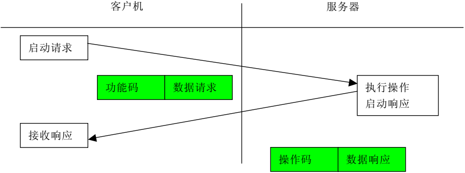
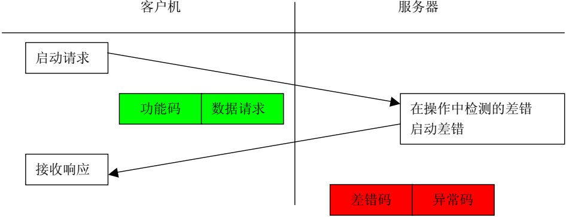
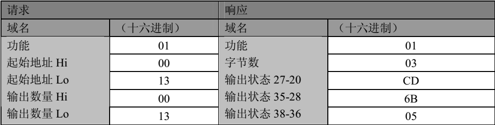
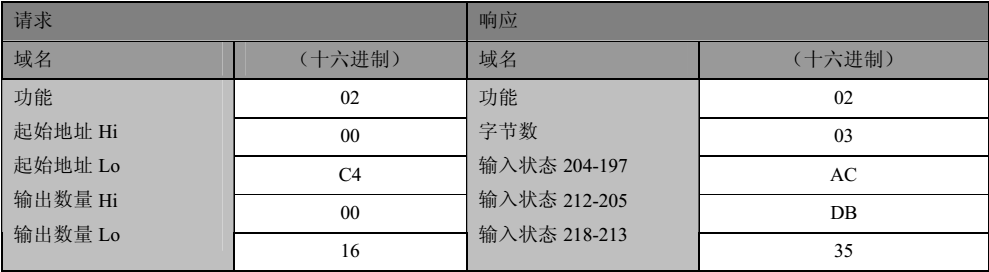
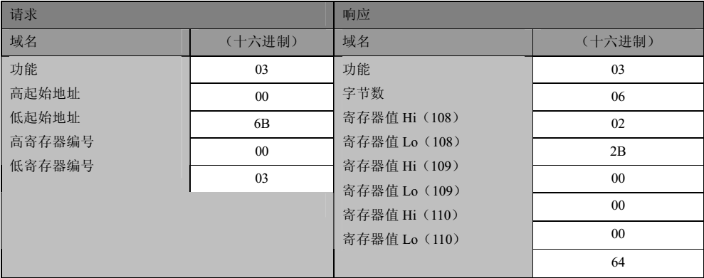
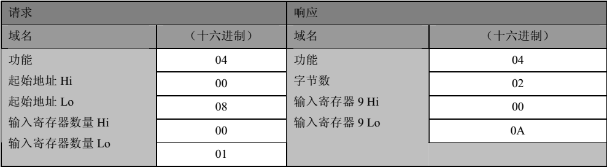
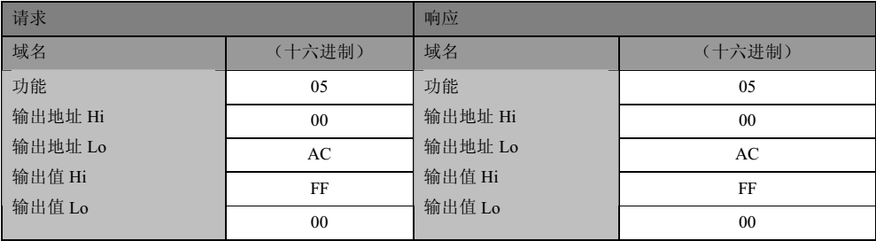
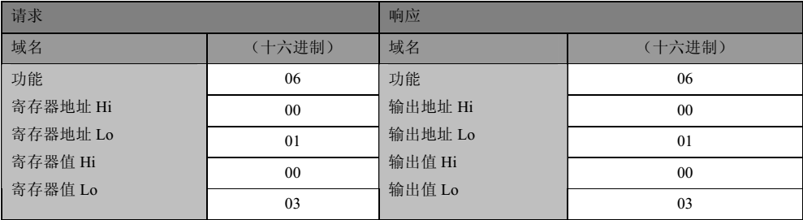
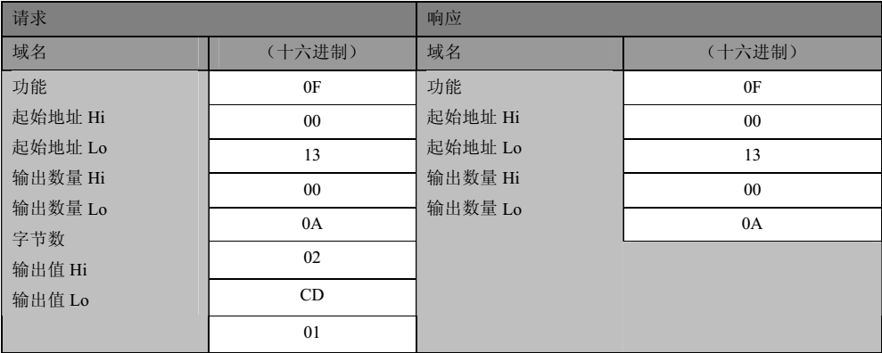
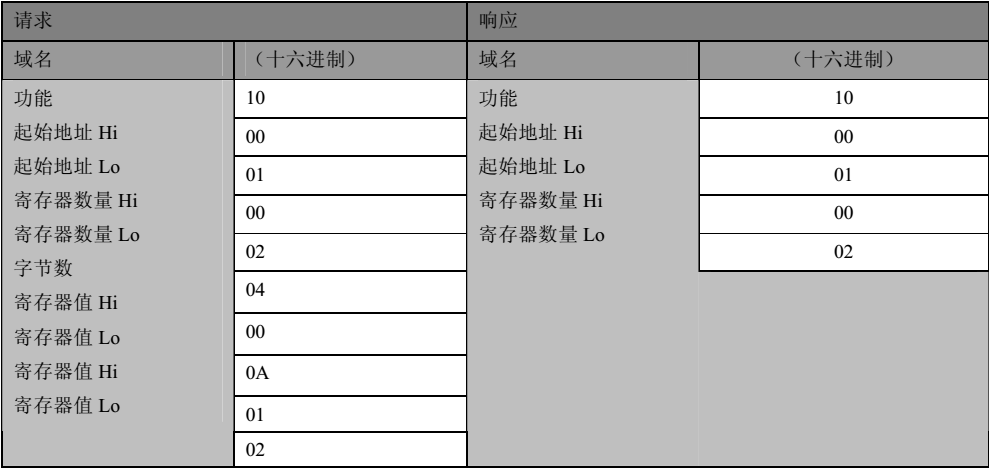

modbus协议
本文最后更新于：2021年7月13日 凌晨
Modbus作为开放式的工业通讯协议，在各种工业设备中应用极其广泛。
Modbus有国际标准，也有国家标准，内容是完全一样的。在标准钟支持2种物理链路：一是基于RS485（RS232）的串行链路；二是基于以太网的TCP/IP链路。事实上，Modbus协议作为一种应用层协议对物理键子并没有特别的要求，光纤、无线等都是可以实现的。
Modbus RTU和Modbus TCP两种标准协议方式，支持常用的功能码：
| 功能码 | 名称 | 实现 | 描述 |
|---|---|---|---|
| 0x01 | 读线圈 | 是 | 对可读写型的状态量进行读取 |
| 0x02 | 读离散输入 | 是 | 对只读型的状态量进行读取 |
| 0x03 | 读保持寄存器 | 是 | 对可读写型的寄存器量进行读取 |
| 0x04 | 读输入寄存器 | 是 | 对只读型的寄存器量进行读取 |
| 0x05 | 写单个线圈 | 是 | 对单个的读写型的状态量进行写入 |
| 0x06 | 写单个寄存器 | 是 | 对单个的读写型的寄存器量进行写入 |
| 0x0F | 写多个线圈 | 是 | 对多个的读写型的状态量进行写入 |
| 0x10 | 写多个寄存器 | 是 | 对多个的读写型的寄存器量进行写入 |
Modbus协议是一种主从（或者说客户端/服务器）模式协议，有主站（客户端）发起事务请求，从站（服务器）响应事务请求。一般我们想要访问（或者说被访问）的设备即为从站（服务器），而我们通常去访问别人的设备就是主站（客户端）。通常在RTU时被称为主站和从站，而在TCP方式时被称为服务器和客户端。这种称呼只是叫法不同，但在本质上是没有区别我的。
1、标准流程
启动MODBUS 事务处理的客户机创建 MODBUS 应用数据单元。当从客户机向服务器设备发送报文时，功能码向服务器指示将执行哪种操作。
从客户机向服务器设备发送的报文数据域包括附加信息，服务器使用这个信息执行功能码定义的操作。如果在一个正确接收的 MODBUS ADU 中，不出现与请求 MODBUS 功能有关的差错，那么服务器至客户机的响应数据域包括请求数据。

正常事务处理流程
如果出现与请求 MODBUS 功能有关的差错，那么域包括一个异常码，服务器应用能够使用这个域确定下一个执行的操作。当服务器对客户机响应时，它使用功能码域来指示正常（无差错）响应或者出现某种差错（称为异常响应）。对于一个正常响应来说，服务器仅对原始功能码响应。

2、操作设计
根据对Modbus标准事务流程的理解，主站和从站的具体操作过程。
主站操作流程：
（1）、初始化主站，站标识符，定时器、
（2）、生成访问命令
生成命令ADU分两层实现：网络层和链路层。
（3）、定时发送访问命令，读命令定是轮询，写命令具有更高的优先级。在有写命令时暂停读命令，
（4）、解析接收到的数据，进行相应操作
从站操作流程：
（1）、协议栈初始化：从站地址设置，创建数据存储域，访问控制
（2）、从站接收消息并解析
解析消息后操作数据（读写对应对象的值）
生成响应
（3）、生成响应数据并回复
3、命令格式
不同的功能码具有不同的消息格式，简单说一下常用的8种功能码的信息格式。
（1）功能码0x01：读线圈
在一个远程设备中，使用该功能码读取线圈的1至2000个连续状态。请求 PDU详细说明了起始地址，即指定的第一个线圈地址和线圈编号。从零开始寻址线圈。因此寻址线圈 1-16 为 0-15。
根据数据域的每个比特将响应报文中的线圈分成为一个线圈。指示状态为 1= ON 和 0= OFF。第一个数据字节的 LSB（最低有效位）包括在询问中寻址的输出。其它线圈依次类推，一直到这个字节的高位端为止，并在后续字节中从低位到高位的顺序。
如果返回的输出数量不是八的倍数，将用零填充最后数据字节中的剩余比特（一直到字节的高位端）。字节数量域说明了数据的完整字节数。具体格式举例如下：

（2）功能码0x02：读离散量输入
在一个远程设备中，使用该功能码读取离散量输入的 1 至 2000 连续状态。请求 PDU 详细说明了起始地址，即指定的第一个输入地址和输入编号。从零开始寻址输入。因此寻址输入 1-16 为 0-15。
根据数据域的每个比特将响应报文中的离散量输入分成为一个输入。指示状态为1=ON 和0=OFF。第一个数据字节的 LSB（最低有效位）包括在询问中寻址的输入。其它输入依次类推，一直到这个字节的高位端为止，并在后续字节中从低位到高位的顺序。
如果返回的输入数量不是八的倍数，将用零填充最后数据字节中的剩余比特（一直到字节的高位端）。字节数量域说明了数据的完整字节数。具体格式举例如下：

事实上，功能码0x01和0x02的数据格式是完全一样的，操作方式也是完全一样的，所不同只是操作的对象不同。
（3）功能码0x03：读保持寄存器
在一个远程设备中，使用该功能码读取保持寄存器连续块的内容。请求 PDU 说明了起始寄存器地址和寄存器数量。从零开始寻址寄存器。因此，寻址寄存器 1-16 为 0-15。
将响应报文中的寄存器数据分成每个寄存器有两字节，在每个字节中直接地调整二进制内容。
对于每个寄存器，第一个字节包括高位比特，并且第二个字节包括低位比特。具体的格式举例如下：

响应信息的长度与具体读取的数据量有关。
（4）功能码0x04：读输入寄存器
在一个远程设备中，使用该功能码读取 1 至大约 125 的连续输入寄存器。请求 PDU 说明了起始地址和寄存器数量。从零开始寻址寄存器。因此，寻址输入寄存器 1-16 为 0-15。
将响应报文中的寄存器数据分成每个寄存器为两字节，在每个字节中直接地调整二进制内容。
对于每个寄存器，第一个字节包括高位比特，并且第二个字节包括低位比特。具体的格式举例如下：

事实上，功能码0x03和0x04的数据格式是完全一样的，操作方式也是完全一样的，所不同只是操作的对象不同。响应信息的长度与具体读取的数据量有关。
（5）功能码0x05：写单个线圈
在一个远程设备上，使用该功能码写单个输出为 ON 或 OFF。
请求数据域中的常量说明请求的ON/OFF状态。十六进制值0xFF00请求输出为 ON。十六进制值0x0000 请求输出为OFF。其它所有值均是非法的，并且对输出不起作用。
请求 PDU 说明了强制的线圈地址。从零开始寻址线圈。因此，寻址线圈1为0。线圈值域的常量说明请求的 ON/OFF 状态。十六进制值 0XFF00 请求线圈为 ON。十六进制值 0X0000 请求线圈为OFF。其它所有值均为非法的，并且对线圈不起作用。
正常响应是请求的应答，在写入线圈状态之后返回这个正常响应。具体的格式举例如下：

（6）功能码0x06：写单个寄存器
在一个远程设备中，使用该功能码写单个保持寄存器。
请求 PDU 说明了被写入寄存器的地址。从零开始寻址寄存器。因此，寻址寄存器1为0。
正常响应是请求的应答，在写入寄存器内容之后返回这个正常响应。具体的格式举例如下：

（7）功能码0x0F：写多个线圈
在一个远程设备中，使用该功能码强制线圈序列中的每个线圈为ON或OFF。请求PDU说明了强制的线圈参考。从零开始寻址线圈。因此，寻址线圈1为0。
请求数据域的内容说明了被请求的ON/OFF状态。域比特位置中的逻辑“1”请求相应输出为ON。域比特位置中的逻辑“0”请求相应输出为 OFF。
正常响应返回功能码、起始地址和强制的线圈数量。具体的格式举例如下：

（8）功能码0x10：写多个寄存器
在一个远程设备中，使用该功能码写连续寄存器块(1至约120个寄存器)。
在请求数据域中说明了请求写入的值。每个寄存器将数据分成两字节。
正常响应返回功能码、起始地址和被写入寄存器的数量。具体的格式举例如下：

本博客所有文章除特别声明外，均采用 CC BY-SA 4.0 协议 ，转载请注明出处！